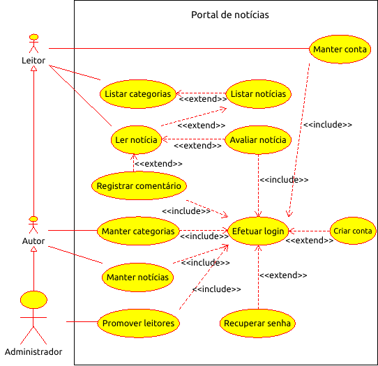

Um site de publicação de notícias.
Um leitor pode navegar entre as categorias de notícias disponíveis e selecionar a notícia que deseja ler. Se o leitor estiver autenticado, ele poderá também avaliar uma determinada notícia como relevante ou não e registrar comentários.
Um autor pode manter as categorias e as notícias publicadas por ele no site. Entende-se por “manter”, a possibilidade de criar, listar, alterar ou remover recursos em um site. Categorias que estiverem em uso, não poderão ser alteradas ou removidas.
Um administrador pode promover leitores à autores no site.
